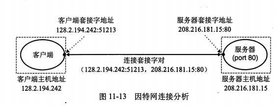

系统I/O
打开关闭文件/改变文件位置/读写文件
RIO包（Robust I/O)提供两类函数
- 无缓冲的输入输出：直接在存储器和文件间传送数据
- 带缓冲的输入：rio_readlineb 他是线程安全的
读取文件元数据：stat/fstat
内核用三个数据结构表示打开的文件：
- 描述符表：每个进程有独立的描述符表，每个描述符表指向文件表的一个表项
- 文件表：文件表的表项包括当前的文件位置、引用计数和指向v-node的指针，所有进程共享
- v-node表：包含stat大多数信息，所有进程共享
共享文件即多个文件表指向一个v-node表
I/O重定向（>）：拷贝旧的描述符表项到新的描述符表项
标准I/O：libc的fopen/fclose、fread/fwrite、fgets/fputs、scanf/printf
三个流stdin、stdout、stderr

一般使用标准I/O，但是网络输入输出等情况需要用低级Unix I/O（或者RIO）
这是因为Unix对网络的抽象为套接字类型文件，对流的限制和对套接字的限制会有冲突。标准I/O是在同一个流输入输出的，而套接字需要打开两个流一个读一个写。
网络编程
网络是个I/O设备
最低层的是局域网LAN，流行的局域网技术是以太网Ethernet，每个以太网适配器有一个全球唯一的48位地址。使用网桥bridge可以将多个以太网段连接成桥接以太网bridged ethernet。
多个不兼容的局域网可以通过路由器router连接，组成互联网络internet。每台路由器对它连接的每个网络都有一个适配器（端口）。路由器也能连接高速点到点通话，这就是广域网WAN。
网络协议消除不同网络之间的差异，他需要两种基本能力：
- 命名机制：一致的主机格式
- 传送机制：把数据捆扎成不连续片（称为包）
全球IP因特网Internet
最成功的的互联网络的实现。
每台主机都实现TCP/IP协议，这实际上是个协议族。
IP协议提供基本的命名方法和传送机制；UDP扩展了IP协议，包可以在进程间传递；TCP则是一个复杂协议，提供进程间双向连接。
主机集合被映射为一组32位的IP地址
用机构存放IP地址这一标量是套接字接口早期实现的不幸产物。
总是以大端法存放在包头，常以点分十进制表示。
这组IP地址被映射为一组被称为因特网域名的标识符
一级域名由ICANN定义，常见的有com、edu、gov、org、net
二级域名由ICANN各个授权代理分配
本机回传地址总是为localhost 127.0.0.1
一般域名和IP地址是一一映射，也有多个域名映射到多个IP地址的
主机上的进程能和其他任何主机上的进程通信
一个套接字是连接的一个端口，每个套接字都有相应的地址，是一个因特网地址和16位整数端口组成。客户端端口是内核自动分配的，称为临时端口；然而服务器端口通常是知名端口，如Web常用80，电子邮件使用25。连接由两端的套接字地址唯一确定。

套接字端口
套接字接口（socket interface）是一组函数。

套接字地址结构
1 | /* Generic socket address structure (for connet bind and accept)*/ |
客户端和服务器用socket函数创建一个套接字描述符。
客户端调用connect函数建立连接，得到的连接是套接字对(x:y, serv.sin_addr:serv.sin_port)刻画的。x是客户端IP地址，y是临时端口。
open_clientfd包装socket和connect函数。
open_listenfd包装socket、bind和listen函数。
accept等待客户端的连接请求。
Web服务器
基于文本的应用级协议HTTP。Web内容可以用HTML来编写。
Web内容是与MIME（多用途国际邮件扩充协议，multipurpose Internet mail extensions)相关的字节序列。
URL可以用“？”分割文件名和参数，参数用“&”隔开。
HTTP支持不同的方法包括GET、POST、OPTIONS、HEAD、PUT、DELETE、TRACE
HTTP请求由一个请求行和零个或更多请求报头，加上一个空行组成。请求行的形式是<method><uri><version>，请求报头的形式为<header name>: <header data>。
HTTP响应由一个响应行和零个或多个响应报头，加上响应主体组成。响应行格式为<version><status code><status message>。响应报头中最重要的是Content-Type告知类型和Content-Length指示大小。
CGI（通用网关接口Common Gateway Interface）提供标准解决服务动态内容的问题。服务器接收请求后，fork创建子进程，并调用execve在子进程上下文执行程序（CGI程序）。
并发编程
基于进程的并发：
fork、exec、waitpid
服务器并发的注意问题
- 必须要SIGCHLD处理程序处理僵死子进程
- 父子进程必须关闭connfd的拷贝
进程共享状态信息困难，为了共享信息，必须使用显式的IPC机制
基于I/O多路复用的并发
使用select函数，要求内核挂起进程，只有I/O事件发生才将控制返回。
优点是给了程序员更多的对程序行为的控制，流之间共享数据变得容易
缺点是编码复杂
基于线程的并发
线程就是运行在进程上下文中的逻辑流。线程由内核自动调度，每个线程有自己的线程上下文。
线程上下文比进程上下文小得多，因而切换更快。线程没有严格的层次，而能对等的读写相同数据。
Posix线程是个标准接口。
线程存储器模型：根据存储类型映射到VM
- 全局变量/静态变量：VM只包含它的一个实例
- 本地自动变量：每个线程的栈包含他自己所有本地自动变量的实例
利用信号量实现互斥、共享资源
四个线程不安全函数
- 不保护共享变量的函数
- 跨越多个调用的状态（比如随机数）
- 返回静态变量指针
- 调用线程不安全函数的函数
竞争：一个线程要在另一个线程到达y点前到达x点，会发生竞争（race）。为了消除竞争，我们可以动态地为y分配一个独立的块并传递给线程例程一个指向这个块的指针。
信号量会导致一种错误叫死锁（deadlock），就是一组线程被阻塞，等待永远不真的条件。
709-723